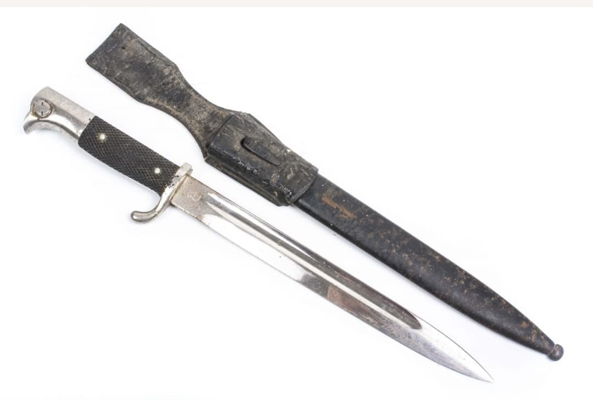
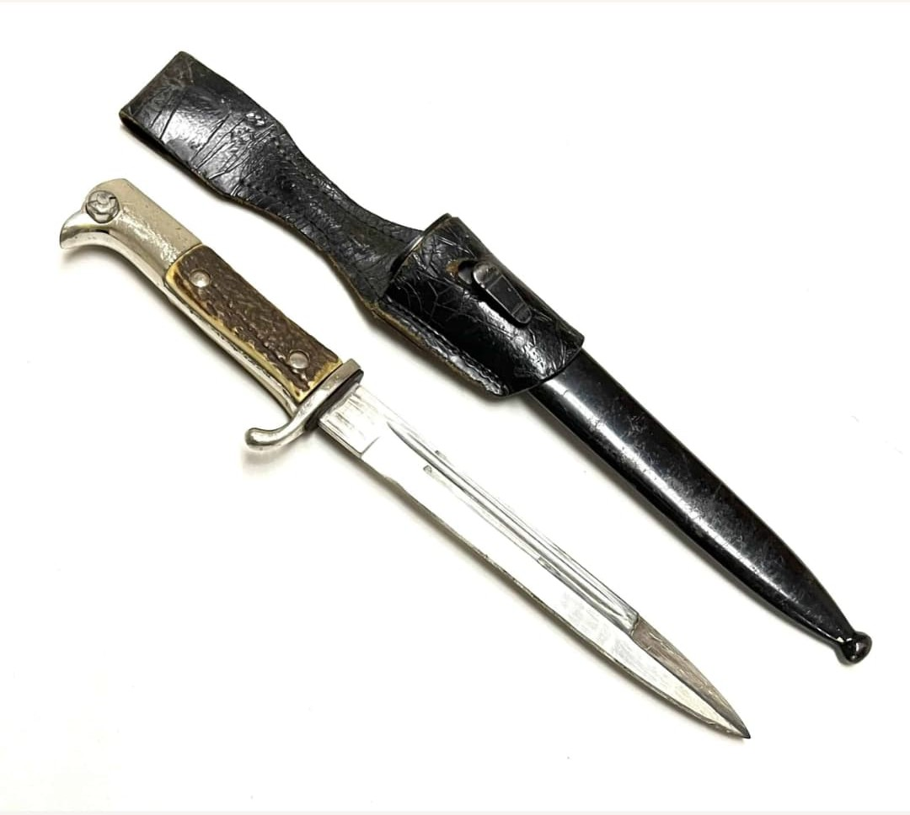
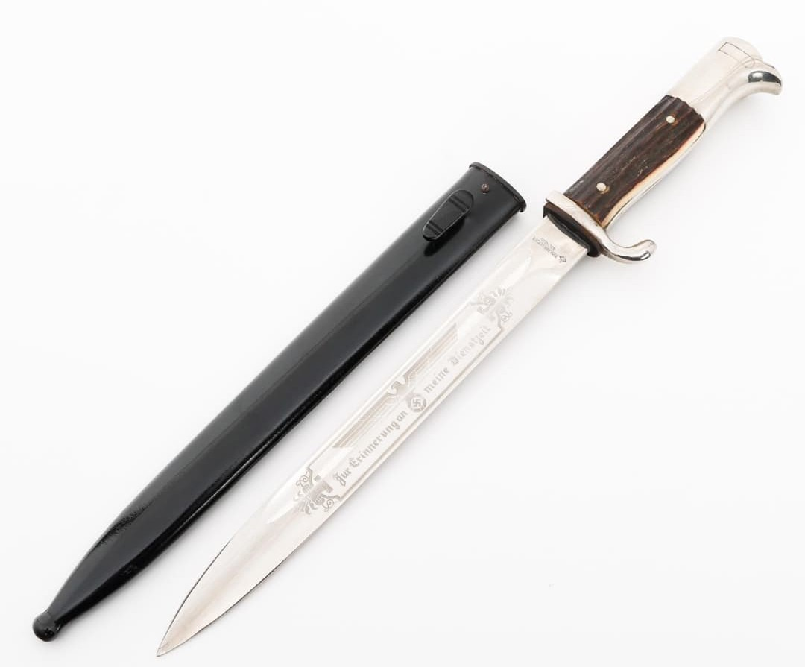
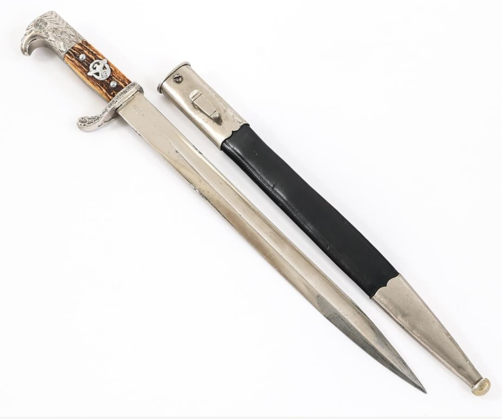

La baïonnette standard de la Wehrmacht pendant la Seconde Guerre mondiale est la Seitengewehr 84/98, souvent abrégée en SG 84/98 ou simplement appelée baïonnette de Karabiner 98k. Elle équipe la majorité des fantassins allemands de 1939 à 1945.
Utilisée à la fois comme arme d’appoint au bout du fusil et comme couteau de combat, elle est produite par de nombreux fabricants, avec des marquages codés et des variantes de finition selon les années de guerre.
La SG 84/98 est une baïonnette à lame droite, simple tranchant, conçue pour se fixer sous le canon du fusil Karabiner 98k. Sa poignée est généralement en bakélite noire ou en bois, avec un pommeau métallique comportant le bouton de verrouillage.
Le fourreau est en acier, souvent bleu ou peint, et porte lui aussi des marquages de fabrication. La baïonnette est portée sur le ceinturon, dans un porte-baïonnette en cuir.


La SG 84/98 existe en plusieurs variantes selon les années et les fabricants. On trouve des différences de finition (lame bleuie, bronzée, parfois polie), de matériaux de poignée et de style de fourreau.
Les marquages incluent des codes de fabricants (byf, cof, fnj, etc.), des numéros de série et l’année de production. Ces détails sont essentiels pour l’identification et la collection des baïonnettes allemandes.

En parallèle de la baïonnette de combat, il existe des baïonnettes de parade (Dress Bayonet) à lame chromée et poignée noire brillante. Elles ne sont pas destinées au combat mais à l’uniforme de sortie et aux cérémonies.
Ces modèles sont très appréciés des collectionneurs pour leur esthétique, mais ne doivent pas être confondus avec la SG 84/98 utilisée sur le terrain.
